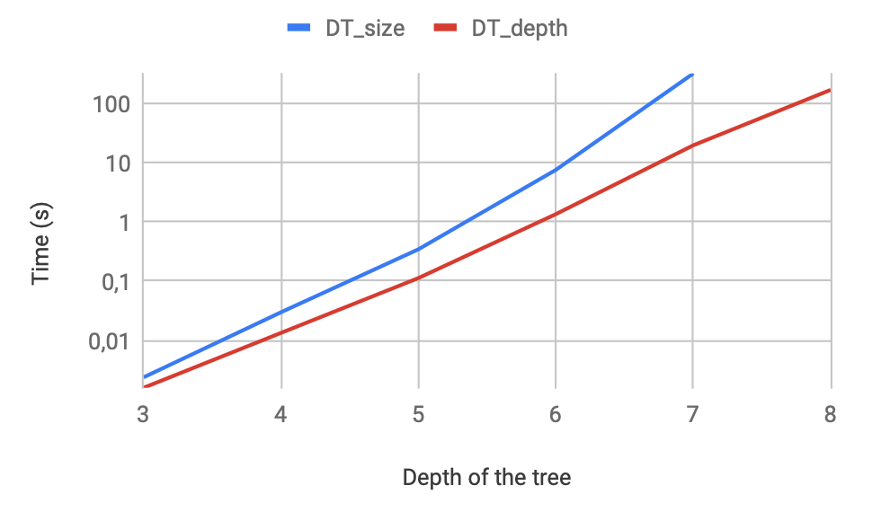
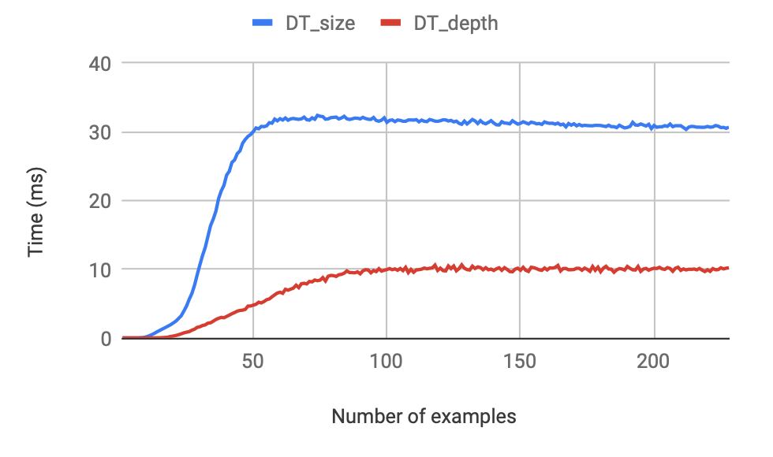

- Mouse を 0.015 秒深さ最小の木（深さ 4）を求めた平均時間（表 1、DT_depth）。Bessiere らの SAT 符号化では 577 秒、Narodytska らの符号化では 12.9 秒だった。
- 1,728 例のうち 33 例同じ Mouse で、DT_depth が実際に式に入れた例の数。既存の 2 手法は 1,728 例すべてを式にした。節の数は 38K で、既存の 2 手法は 1.2M と 3.5M だった。
- Car で精度 98.8%データ全体を誤りなく分ける最小の木がそれまで厳密法で求められていなかった Car で、深さ 8 の木を 170 秒で求めた（10 分割交差検証の精度）。例を 10% だけ使った Narodytska らの木は 55% だった。
学習データを誤りなく分ける最小の木を求める厳密法は、例が増えると式が大きくなりすぎて解けなかった
決定木は分類の理由がはっきりしているので、説明できるモデルとして使われる。論文は誤りが許されない用途を念頭に、学習データをすべて正しく分類する（データと矛盾しない）木のうち、いちばん単純なものを求める。単純さの基準は木の深さとノードの数である。最適な決定木を求める問題は、いくつもの最適性の定義で NP 完全であることが知られている（Hyafil と Rivest 1976 ほか）。そのため CART や C4.5 などの多くの方法は貪欲法で、最小である保証はない。
この問題にいちばん近い先行研究は、ノードの数が最小の木を SAT で求める Bessiere ら（2009）と Narodytska ら（2018）である。どちらもすべての例を一度に論理式にする。Bessiere らの SAT の定式化はノードが 15 個ほどの小さな木までしか解けなかった。Narodytska らの新しい符号化は Mouse データを 13 秒で解いたが、例の多い Car データでは例を 10% に減らして解いていた。
最適性は 2 段階で定める：まず深さを最小にし、その深さのなかでノードの数を最小にする
例 \(e_0, \dots, e_{n-1}\) は \(m\) 個の二値の特徴量 \(f_0, \dots, f_{m-1}\) の値の組で、\(c\) 個のクラスのどれかに属する。カテゴリや数値の特徴量は、「カテゴリ \(x\) に属するか」や「値が \(t\) 以下か」を表す二値の特徴量に置き換えて扱う。論文は 2 つのアルゴリズムを示す。
- DT_depth：データと矛盾しない完全な決定木（すべての葉が同じ深さ）のうち、深さ \(k\) が最小のものを求める。\(k = 1\) から始め、解がなければ \(k\) を 1 増やす。
- DT_size：DT_depth で最小の深さ \(k\) を求めたあと、ノードの数の上限を 1 から \(2^{k+1} - 1\) のあいだで二分探索し、深さ \(k\) 以下でノードの数が最小の木を求める。こちらの木は完全とは限らない。
深さに制限をかけずにノードの数だけを最小にする先行研究とは目的が違う。また、深さを決めて訓練データでの誤分類を最小にする BinOCT や OCT とも違い、この論文の木は訓練データの例をすべて正しく分類しなければならない。
例が入る葉の番号を 2 進表記の変数で表すと、根から葉までの分岐の向きがそのまま読み取れる
深さ \(k\) の完全な木で、ノードに根から順に番号を付ける。根を \(V[1]\) とし、\(V[i]\) の左の子を \(V[2i]\)、右の子を \(V[2i+1]\) とする（左が偽、右が真）。葉 \(V'[0], \dots, V'[2^k - 1]\) の番号を 2 進表記で上の桁から読むと、根からその葉までどちらの枝を進んだかがわかる。そこで例 \(e_i\) ごとに \(k\) 個の変数 \(X_{i,0}, \dots, X_{i,k-1}\) を置き、その 2 進表記 \(X_i\) を例が入る葉の番号とする。\(X_{i,j}\) が真なら、例は深さ \(j\) のノードで右へ進む。
ほかの変数は、ノード \(V[q]\) が特徴量 \(f\) で分岐することを表す \(F_{q,f}\) と、葉 \(V'[v]\) にクラス \(a\) が付くことを表す \(C_{v,a}\) である。各ノードの特徴量はちょうど 1 つと決め、例を置いた位置から次の制約を足す。
\(q_{ij}\) は例 \(e_i\) の道筋で深さ \(j\) にあるノードの番号である。左へ進んだノードはその例で真になる特徴量を使えず、右へ進んだノードは偽になる特徴量を使えない。また、例が入った葉にはその例のクラスが付き、ほかのクラスは付かない。式の大きさは変数（論文の言い方ではリテラル）が \(O(2^k (n + m + c))\)、節が \(O(2^k (m^2 + mn + c))\) である。なお論文の式 (3) と (4) の印刷上の向きは、付録の例やアルゴリズム 1 と食い違うので、ここでは意味に沿って書いた（解説者の注）。
ノードの数の上限は、クラスが付いた葉の数を数える制約に置き換えて入れる
完全な木にはむだなノードが多い。同じ深さで、もっとノードの少ない完全でない木がデータと矛盾しないこともある。論文はクラスが付かなかった葉に注目する。そういう葉があれば、その親ノードをもう一方の子で置き換えてよい。これを繰り返すと、葉の数が内部ノードの数よりちょうど 1 多い木になる。したがって、ノードの数を MaxNodes 以下にする制約は、クラスが付いた葉の数を \(\lfloor \text{MaxNodes}/2 \rfloor + 1\) 以下にする制約と同じ働きをする。
葉 \(i\) にクラスが付いたら真になる変数 \(U_i\) と、先頭から \(i\) 枚の葉のうちクラスが付いた葉が \(j\) 枚以上なら真になる変数 \(H_{i,j}\) を足し、葉の数を 1 つずつ数える（単項の数え上げ）。変数と節の数の桁は、上限を入れない場合と変わらない。ただし最小のノード数は二分探索で探すので、DT_size は DT_depth より時間がかかる。
今の木が誤って分類する例を 1 つ選んで式に足し、SAT を解き直すことを繰り返す
例が多いと式が大きくなる問題には、例を少しずつ足すことで対処する。最初は「各ノードに特徴量がちょうど 1 つ」という制約だけを解き、得られた木で学習データのすべての例を分類する。すべて正しければ、その木を返す。誤って分類された例があれば、そのうち 1 つについての制約（上の符号化の節）を式に足し、もう一度解く。式が充足できなくなったら、その深さ（とノード数）では解がない。
論文はこれを能動学習になぞらえ、どのクラスかを答える役（オラクル）を学習データに任せたものと説明する。答えられるのは学習データにある例だけだが、それでも学習データ全体と矛盾しない木を求められる。必要な例がそろえば、残りの例は式に入らない。論文の付録の例（深さ 2、8 例）では、5 例を足したところでデータ全体と矛盾しない木が得られる。
Mouse では 33 例だけを使って 0.015 秒で解き、Car ではデータ全体と矛盾しない深さ 8 の木を求めた
実装は C++ で、SAT ソルバーには MiniSAT を使った。Mouse と Car は Bessiere らから提供されたデータである。Mouse では、先行研究の SAT 符号化（Bessiere らを DT2、Narodytska らを DT1 と呼ぶ）が 1,728 例すべてを使ったのに対し、DT_size は 37 例、DT_depth は 33 例しか使わなかった（100 回の平均）。表の時間は DT2 が 577 秒、DT1 が 12.9 秒、DT_size が 0.075 秒、DT_depth が 0.015 秒で、ノードの数はどれも 15（DT_depth は完全な木なので 31）である。DT1 と DT2 の精度はそれぞれの論文に載っていないので比べていない。
Car は 1,729 例で、論文によれば、データ全体と矛盾しない最適な木を求めた方法はそれまでなかった。DT1 は例の 10% だけを使い、684 秒で解いた。DT_depth は 635 例を使い、170 秒で深さ 8・ノード 511 の木を求めた。DT_size は 758 例を使い、260 秒でノード 136 の木を求めた（10 回の平均）。10 分割交差検証の精度はどちらも 98.8% で、DT1 は 55% だった。Bessiere らの線形計画による方法（DT3）は最適性の保証がないが、44.8 秒でノード 92 の木を求め、精度は 99.22% と高かった。DT3 には深さの制約がないので、ノードは少ないが木は深くなる。
（解説者の注）DT1 と DT2 の時間と節の数は Narodytska らの論文の値と一致するので、同じ計算機で測り直したものではないと考えられる。論文自身はこの点を書いていない。
| Mouse（表 1） | 時間（秒） | 使った例 | 節の数 | 深さ | ノード | 精度 |
|---|---|---|---|---|---|---|
| DT2（Bessiere ら） | 577 | 1,728 | 3.5M | – | 15 | – |
| DT1（Narodytska ら） | 12.9 | 1,728 | 1.2M | – | 15 | – |
| DT_size | 0.075 | 37 | 42K | 4 | 15 | 84.0% |
| DT_depth | 0.015 | 33 | 38K | 4 | 31 | 85.6% |
表は論文の Table 1（arXiv 前版）から解説者が作成した。精度は 10 分割交差検証による。
BinOCT のデータ 6 つで、深さが大きい木が必要なデータほど、誤りなく分ける木の精度が高かった
深さを決めて訓練データでの誤分類を最小にする方法とも比べた。データは Verwer と Zhang（2019）の 16 個から取り、5 分割交差検証を使う。比較相手の BinOCT*、CART、OCT については、深さ 2〜4 のうち最もよい値を載せている。誤りなく分ける木は大きく深くなりすぎることがあり、実行できたのは 16 個のうち 6 個だけだった。
論文によれば、木が浅い（深さ 5 未満）データでは精度は手法のあいだでほぼ同じに見え、深い木が必要なデータほど提案法の精度が高くなる。最もはっきりしているのは balance-scale で、DT_depth は深さ 8 の木を 55 秒で求め、精度は 92.6% だった（BinOCT* は 78.9%）。6 データの平均精度は DT_size が 87.9%、DT_depth が 85.8%、BinOCT* が 85.5%、CART が 82.18%、OCT が 81.1% である。ただし Monks-probl-3 では BinOCT* や CART、OCT のほうが高い。
| データ | DT_depth 時間（秒） | 精度 | 深さ | DT_size 時間（秒） | 精度 | ノード | BinOCT* | CART | OCT |
|---|---|---|---|---|---|---|---|---|---|
| iris | 0.012 | 97.9% | 3 | 0.019 | 95.8% | 10.6 | 98.4% | 92.4% | 93.5% |
| Monks-probl-1 | 0.016 | 89.0% | 4.4 | 0.12 | 92.3% | 17 | 87.1% | 76.8% | 74.2% |
| Monks-probl-2 | 0.18 | 68.4% | 5.8 | 8.6 | 73.0% | 47.8 | 63.3% | 63.3% | 54.0% |
| Monks-probl-3 | 0.02 | 78.7% | 4.8 | 0.2 | 81.9% | 23.4 | 93.5% | 94.2% | 94.2% |
| wine | 0.6 | 88.4% | 3 | 1.6 | 92.0% | 7.8 | 92.0% | 88.9% | 94.2% |
| balance-scale | 55 | 92.6% | 8 | 350 | 92.6% | 206 | 78.9% | 77.5% | 71.6% |
| 平均 | 85.8% | 87.9% | 85.5% | 82.18% | 81.1% |
論文の Table 3（arXiv 前版）から解説者が作成した。深さとノードは交差検証の各回の平均。BinOCT*、CART、OCT は深さ 2〜4 のうち最もよい値で、制限時間は BinOCT* が 10 分、OCT が 30 分〜2 時間。
計算時間は深さと特徴量の数には指数的に増えるが、例の数には必要な数に達したところで頭打ちになる
深さ、特徴量の数、クラスの数を決めて木をランダムに作り、その木から例を生成した人工データで、1 つのパラメータだけを動かした。クラスの数に対して時間はほぼ線形に増えた。深さ \(k\) に対しては指数的に増えた（図3）が、木のノードの数は深さに対して指数的に増えるので、論文はノードの数に対してはほぼ多項式的だと述べる。特徴量の数に対しても時間はほぼ指数的に増え、論文は特徴量の数が計算時間に最も大きく影響するようだとし、その影響を減らすことを改善の方向に挙げている。
例の数を増やすと、時間は初めは急に増えるが、ある数で頭打ちになった（図4）。この数はデータ全体と矛盾しない木を得るのに必要な例の数にあたる。それより例を増やしても式に入る例は増えないので、時間はほとんど変わらない。例の数とともに時間が大きく増えた先行研究の SAT による方法との違いはここにある。


SAT で最小の木を求める系統で、データ全体を一度に扱わずに済む探索を持ち込んだ
- 目的：訓練データの例をすべて正しく分類することを制約にして、深さを最小にし、その深さでノードの数を最小にする。深さの制約のもとで誤分類を最小にする BinOCT や DL8.5 などとは問題が違う。訓練データを誤りなく分ける木が大きく深くなりすぎて、解けないデータもある（BinOCT のデータでは 16 個のうち 10 個）。
- 符号化：Narodytska ら（2018）は木の形そのものを変数で表したが、この論文は完全な木に番号を付け、例の行き先を葉の番号の 2 進表記で表す。ノードの数はクラスの付いた葉を数える制約で抑える。
- 大きなデータへの対処：誤って分類された例（反例）を 1 つずつ足す探索で、式に入る例を必要な分だけに抑える。誤りを許して誤分類を最小にする MaxSAT への拡張は Hu ら（2020）、木の一部だけを SAT で解き直す局所改善は Schidler と Szeider（2021）が扱う。
- 特徴量：二値の特徴量を前提にする。数値の特徴量は「しきい値以下か」を表す二値の特徴量の組に置き換える。
@inproceedings{avellaneda2020efficient,
title = {Efficient Inference of Optimal Decision Trees},
author = {Avellaneda, Florent},
booktitle = {Proceedings of the AAAI Conference on Artificial Intelligence},
volume = {34},
number = {04},
pages = {3195--3202},
year = {2020},
doi = {10.1609/aaai.v34i04.5717}
}
このページの内容と数値と図は、arXiv の前版 1904.06314 v1（2019 年 4 月 12 日、題名は “Learning Optimal Decision Trees from Large Datasets”）による。AAAI 2020 の出版版の本文は確認していないので、手法の細部や実験の数値が出版版と違う可能性がある。書誌情報は Crossref で確認した。所属は arXiv 版の表記である。